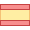

<nav class="navbar navbar-expand navbar-theme navBackgroundColor">
  <a style="width: 150px;" class="sidebar-toggle d-flex me-2">
      <i class="hamburger align-self-center"></i>
  </a>

  <a style="width: 150px;" class="text-white" aria-current="page" routerLink="lastposts" routerLinkActive="active">Last posts</a>

  <a style="width: 150px;" class="text-white" aria-current="page" routerLink="searchpage" routerLinkActive="active">Map</a>

  <a style="width: 150px;" class="text-white" routerLink="birdpage" routerLinkActive="active">See birds</a>

  <a style="width: 265px;" class="text-white" routerLink="withoutspecie" routerLinkActive="active">{{ 'general.pendingSpecie' | translate }}</a>


    <a [hidden]="isLogged | async" routerLink="login" class="btn btn-secondary" role="button">
        {{ 'account.login' | translate }}
    </a>&nbsp;
    <a [hidden]="isLogged | async" routerLink="signup" class="btn btn-secondary" role="button">
        {{ 'account.signUp' | translate }}
    </a>


  <div class="navbar-collapse collapse">
    <ul class="navbar-nav ms-auto">
      <li class="nav-item dropdown ms-lg-2">
        <a class="nav-link dropdown-toggle position-relative" href="#" id="userDropdown" data-bs-toggle="dropdown" aria-expanded="false">
          
          
        </a>
        <div class="dropdown-menu dropdown-menu-end" aria-labelledby="userDropdown">
          <a class="dropdown-item" routerLink="createPost/post" routerLinkActive="active"><i class="align-middle me-2 fas fa-fw fa-file-image"></i>Post</a>
          <a class="dropdown-item" routerLink="createPost/observation" routerLinkActive="active"><i class="align-middle me-2 fas fa-fw fa-file-image"></i>Observation</a>
        
          <a class="sidebar-link"  routerLink="userpage/{{user.userId}}" routerLinkActive="active">
            <i class="align-middle me-2 far fa-fw fa-list-alt"></i> <span class="align-middle">Page</span>
          </a>

          <a class="sidebar-link" routerLink="/usermappage/{{user.userId}}" routerLinkActive="active">
            <i class="align-middle mr-2 fas fa-fw fa-map-marked-alt"></i> <span class="align-middle">Map</span>
          </a>

          <a class="sidebar-link" routerLink="/userProfile" routerLinkActive="active">
            <i class="align-middle me-2 fas fa-fw fa-user"></i> <span class="align-middle">Your profile</span>
          </a>

          <a class="sidebar-link" routerLink="/uservotes" routerLinkActive="active">
            <i class="align-middle me-2 far fa-fw fa-star"></i> <span class="align-middle">Post votes</span>
          </a>

          <a class="dropdown-item" href="#"><i class="align-middle me-1 fas fa-fw fa-cogs"></i> Settings</a>
          <div class="dropdown-divider"></div>
           <a class="sidebar-link" routerLink="/" (click)="logout()">
              <i class="align-middle me-2 fas fa-fw fa-sign-in-alt"></i> <span class="align-middle">{{ 'account.logOut' | translate }}</span>
            </a>
        </div>
      </li>
    </ul>
  </div>

</nav>
<!--

      <div class="btn-group me-2">
          <button type="button" class="btn btn-secondary dropdown-toggle" data-bs-toggle="dropdown" data-bs-display="static" aria-expanded="false">
              Language
          </button>
          <ul class="dropdown-menu dropdown-menu-lg-end">
              <li><a class="dropdown-item" (click)="changeLang('en')">English</a></li>
              <li><a class="dropdown-item" (click)="changeLang('es')">Español</a></li>
              <li> <a class="dropdown-item" (click)="changeLang('de')">Deutsche</a></li>
          </ul>
      </div>
-->